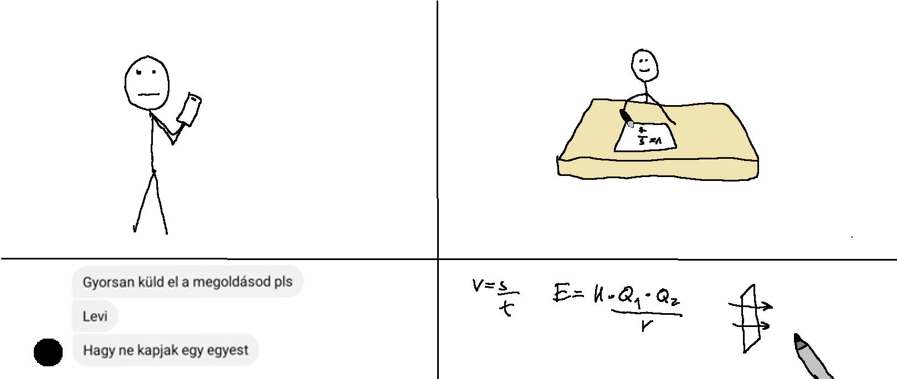
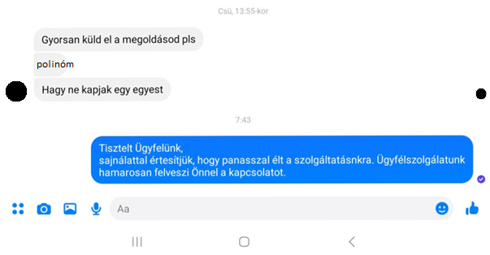
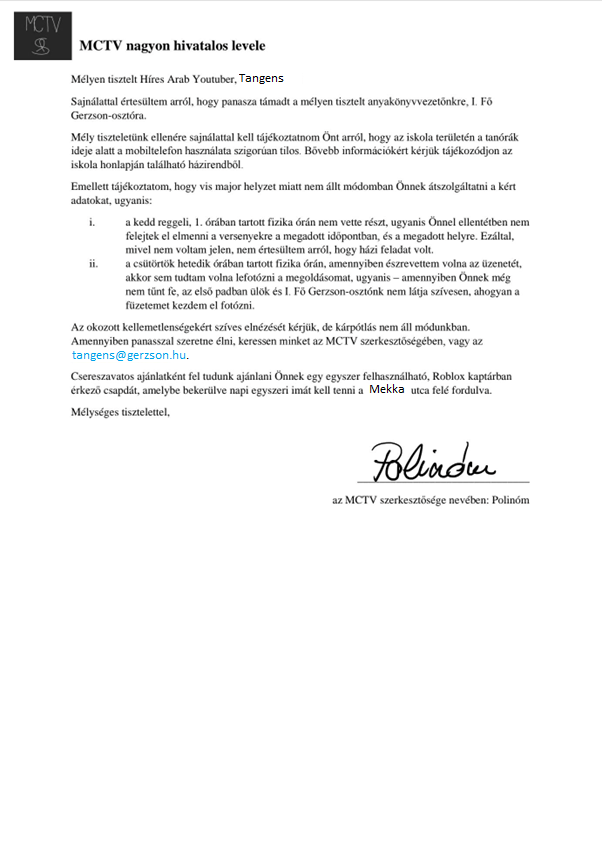

Majdnem felelt Tangens fizikán
Fizika óra elején Koszinusz Tangens tolltartóját a székére rakta, így ráült Tangens. Mivel ez Tangensnek nem tetszett, ezért ő lelökte Koszinusz tolltartóját. A tanár a második eseményt látta és kihívta Tangenst felelni. Így érte el a karma Tangenst, mivel fél évvel ezelőtt miatta írt a három szögfüggvény. Mivel nem volt kréta, ezért a tanár felelés előtt kiküldte Tangenst krétáért. Tangens 5 percre eltűnt, majd megérkezett a krétával, de végül nem felelt. Mint később kiderült, Tangens ez alatt az idő alatt segítséget akart kérni Polinómtól amit Polinóm az óra után vett észre, de ekkor válaszolt is. A következő párbeszéd zajlott le:
